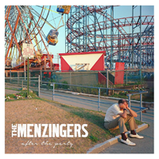

Run the Jewels kicked off 2017 with a bang(er) - RTJ3. This album absolutely set the tone for a year of political strife, spitting lines like 'He wore a bad toupee and a spray tan' and 'Get that punk mother*** out of here'. \n\n They clearly show where
they stand on the side of social issues, and what better way to address these than with dual perspectives from two very intelligent men of diffent races and backgrounds. Also, you can't beat appearances by Zack de la Rocha.
You can't even really compare this to the other albums because it has a totally different vibe of urgency and retaliation for what is being done to us as a people. We the People.

The Menzingers
This album means more to me than most others because it has become 'the album' for my wife and I. It really does cover all of the bases - nostalgia, fun, some seriousness and the catchy hooks that they are known for. \n\n I could include a lot more about
this but it would probably sound super mushy so I'll let you form your own opinions on the matter. This album is the magnificent crescendo of their career, every time I think they won't be able to top themselves, they do.
Anxiously awaiting the next album.
Run The Jewels
$5.00
Run the Jewels kicked off 2017 with a bang(er) - RTJ3. This album absolutely set the tone for a year of political strife, spitting lines like 'He wore a bad toupee and a spray tan' and 'Get that punk mother*** out of here'. \n\n They clearly show where
they stand on the side of social issues, and what better way to address these than with dual perspectives from two very intelligent men of diffent races and backgrounds. Also, you can't beat appearances by Zack de la Rocha. You can't
even really compare this to the other albums because it has a totally different vibe of urgency and retaliation for what is being done to us as a people. We the People.
The Menzingers
$6.00
This album means more to me than most others because it has become 'the album' for my wife and I. It really does cover all of the bases - nostalgia, fun, some seriousness and the catchy hooks that they are known for. \n\n I could include a lot more about
this but it would probably sound super mushy so I'll let you form your own opinions on the matter. This album is the magnificent crescendo of their career, every time I think they won't be able to top themselves, they do. Anxiously
awaiting the next album.